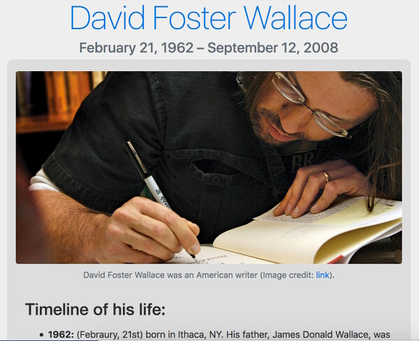

Chemical Engineer with a passion for coding, working out and good food.
I'm learning Web Development through freeCodeCamp .
Front-End Web Developer
Chemical Engineer with a passion for coding, working out and good food.
I'm learning Web Development through freeCodeCamp .
 Portfolio Website
Portfolio Website
I'm trying to put everything I learned into this portfolio.
In this project I want to focus on UI/UX design, experimenting on microcopy and on the small interactions and animations that make a website pleasant to use, both on desktop and on mobile.
Tools: CSS Grid, jQuery, Google Analytics.
 Wedding page with Instagram viewer
Wedding page with Instagram viewer
This is the website I made for my sister's wedding. The main page lists their honeymoon destinations: Each place has a card showing a picture and a brief description on mouse hover.
The Instagram page is a web scraper that shows the user a live feed of all the pictures posted on Instagram with the wedding's hashtag, #GinZano2018.
Tools: CSS Grid, jQuery, Google Analytics.
Random Famous Quotes ViewerOne of the many freeCodeCamp's Front End projects. I used a free API (thanks to Tadas Talaikis) that serves a random quote and its author at each call.
I experimented with API calls, Twitter's share button and fonts selection (Roboto, by the way).
Tools: CSS Grid, jQuery.
 David Foster Wallace Tribute PageMy very first project as a web developer, and the first for freeCodeCamp's curriculum.
I had fun getting my hands dirty!
Tools: Bootstrap.
HTML5
CSS3
Flexbox
Grid
JavaScript
jQuery
Google Analytics
Font Awesome